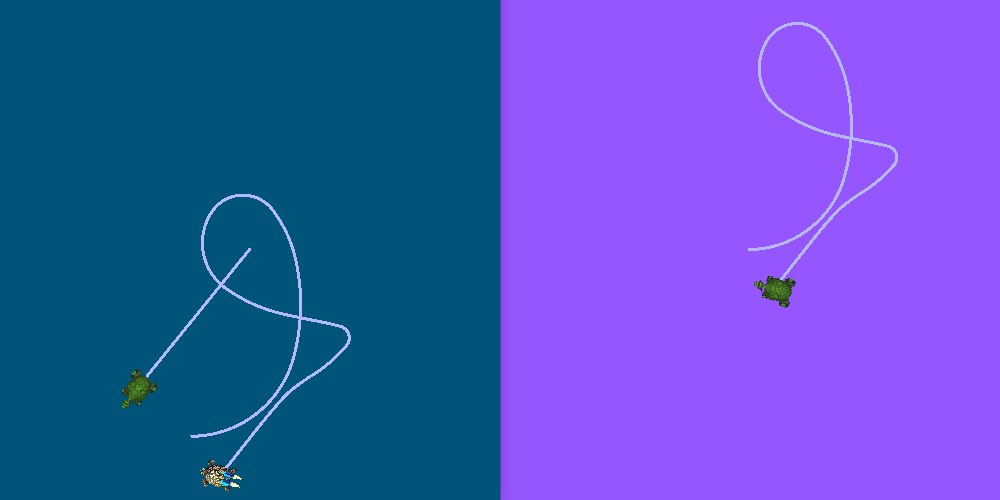
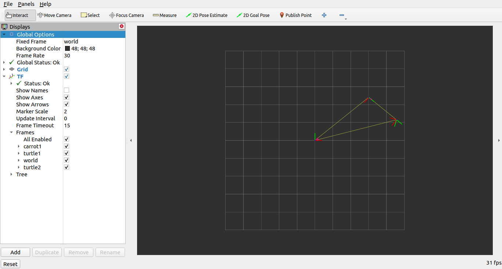

管理大型项目
目标: Learn best practices of managing large projects using ROS 2 launch files.
教程等级: 中级
预计时长: 20 分钟
背景
本教程包含了在大型项目中编写启动文件的一些建议。 教程会把重点放在如何设计启动文件的结构，以便在不同情况下尽可能多地复用它们。 此外还涵盖了不同 ROS 2 启动工具的使用示例，如参数、YAML 文件、重映射、命名空间、默认参数和 RViz 配置。
前提条件
本教程使用到了 turtlesim 和 turtle_tf2_py 包。
本教程还假设你已经 创建了一个新的包，构建类型为 ament_python，名为 launch_tutorial。
简介
在机器人上运行大型应用时，通常涉及到多个相互连接的节点，每个节点可能有很多参数。
在小乌龟模拟器中模拟多个乌龟就是一个不错的例子。
这个模拟器包含多个 turtle 节点、世界配置(world configuration)和 TF 广播器(broadcaster)和监听器(listener)节点。
在所有节点之间，有很多 ROS 参数会影响这些节点的行为和外观。
ROS 2 启动文件使得我们可以在一个地方启动所有节点并设置相应的参数。
在本教程的最后，你将在 launch_tutorial 包中构建 launch_turtlesim.launch.py 启动文件。
这个启动文件将启动两个 turtlesim 模拟器，启动 TF 广播器和监听器，加载参数，并启动 RViz 配置。
在本教程中，我们将讨论到这个启动文件以及所有相关的特性。
编写启动文件
1 顶层组织
编写启动文件的一个重要目的是尽可能使它们可复用。 那么可以通过将有关联的节点和配置汇总到单独的启动文件中来实现这个目标。 然后，再编写一个专门用于特定场景，包含了特殊配置的顶层启动文件(来启动其它各个功能模块的启动文件)。 在不同的机器人上运行相同的应用时，只需更改顶层启动文件中的参数即可。 或者只是修改很少几个参数就从真机切换到仿真机器人。
现在我们先来看一下顶层启动文件的结构。
首先，我们创建一个启动文件，用于拉起(也就是启动、调用的意思)其它启动文件。
在 launch_tutorial 包的 /launch 文件夹中创建一个 launch_turtlesim.launch.py 文件。
import os
from ament_index_python.packages import get_package_share_directory
from launch import LaunchDescription
from launch.actions import IncludeLaunchDescription
from launch.launch_description_sources import PythonLaunchDescriptionSource
def generate_launch_description():
turtlesim_world_1 = IncludeLaunchDescription(
PythonLaunchDescriptionSource([os.path.join(
get_package_share_directory('launch_tutorial'), 'launch'),
'/turtlesim_world_1.launch.py'])
)
turtlesim_world_2 = IncludeLaunchDescription(
PythonLaunchDescriptionSource([os.path.join(
get_package_share_directory('launch_tutorial'), 'launch'),
'/turtlesim_world_2.launch.py'])
)
broadcaster_listener_nodes = IncludeLaunchDescription(
PythonLaunchDescriptionSource([os.path.join(
get_package_share_directory('launch_tutorial'), 'launch'),
'/broadcaster_listener.launch.py']),
launch_arguments={'target_frame': 'carrot1'}.items(),
)
mimic_node = IncludeLaunchDescription(
PythonLaunchDescriptionSource([os.path.join(
get_package_share_directory('launch_tutorial'), 'launch'),
'/mimic.launch.py'])
)
fixed_frame_node = IncludeLaunchDescription(
PythonLaunchDescriptionSource([os.path.join(
get_package_share_directory('launch_tutorial'), 'launch'),
'/fixed_broadcaster.launch.py'])
)
rviz_node = IncludeLaunchDescription(
PythonLaunchDescriptionSource([os.path.join(
get_package_share_directory('launch_tutorial'), 'launch'),
'/turtlesim_rviz.launch.py'])
)
return LaunchDescription([
turtlesim_world_1,
turtlesim_world_2,
broadcaster_listener_nodes,
mimic_node,
fixed_frame_node,
rviz_node
])
这个启动文件包含了一系列其它启动文件。 每个被引用的启动文件都包含了与系统的一个部分有关的节点、参数和可能的嵌套引用。 更具体地说，我们启动了两个 turtlesim 模拟器，TF 广播器、TF 监听器、模仿器(mimic)、坐标系广播器(fixed frame broadcaster)和 RViz 节点。
Note
设计提示: 顶层启动文件应该比较简短，引用应用中用到的其它子程序的启动文件，还包含一些顶层常用的启动参数。
随后能看到，用这样的方式编写启动文件，可以很容易地替换系统中的某个部分。 不过，有时候由于性能和使用方式的原因，一些节点或启动文件必须单独启动。
Note
设计提示: 请注意权衡应用需要多少个顶层启动文件。(并非所有情况下都是只有一个最顶层的启动文件才是最好的)
2 参数(Parameters)
2.1 在启动文件中设置参数
首先，编写一个启动文件，用于启动第一个 turtlesim 仿真。
创建一个名为 turtlesim_world_1.launch.py 的新文件。
from launch import LaunchDescription
from launch.actions import DeclareLaunchArgument
from launch.substitutions import LaunchConfiguration, TextSubstitution
from launch_ros.actions import Node
def generate_launch_description():
background_r_launch_arg = DeclareLaunchArgument(
'background_r', default_value=TextSubstitution(text='0')
)
background_g_launch_arg = DeclareLaunchArgument(
'background_g', default_value=TextSubstitution(text='84')
)
background_b_launch_arg = DeclareLaunchArgument(
'background_b', default_value=TextSubstitution(text='122')
)
return LaunchDescription([
background_r_launch_arg,
background_g_launch_arg,
background_b_launch_arg,
Node(
package='turtlesim',
executable='turtlesim_node',
name='sim',
parameters=[{
'background_r': LaunchConfiguration('background_r'),
'background_g': LaunchConfiguration('background_g'),
'background_b': LaunchConfiguration('background_b'),
}]
),
])
这个启动文件启动了 turtlesim_node 节点，启动了 turtlesim 仿真，并传递了定义和传递给节点的仿真配置参数。
2.2 从 YAML 文件中加载参数
在第二个启动文件中，我们将使用不同的配置启动第二个 turtlesim 仿真。
现在创建一个名为 turtlesim_world_2.launch.py 的新文件。
import os
from ament_index_python.packages import get_package_share_directory
from launch import LaunchDescription
from launch_ros.actions import Node
def generate_launch_description():
config = os.path.join(
get_package_share_directory('launch_tutorial'),
'config',
'turtlesim.yaml'
)
return LaunchDescription([
Node(
package='turtlesim',
executable='turtlesim_node',
namespace='turtlesim2',
name='sim',
parameters=[config]
)
])
这个启动文件会启动带有从 YAML 配置文件中加载的参数的 turtlesim_node。
在 YAML 文件中定义参数和参数，可以很容易地存储和加载大量变量。
此外，可以很容易地从当前 ros2 param 列表中导出 YAML 文件。
有关这一点的实现，请参考 Understand parameters 教程。
现在创建一个名为 turtlesim.yaml 的配置文件，放在包的 /config 文件夹中，这个配置文件会被我们的启动文件加载。
/turtlesim2/sim:
ros__parameters:
background_b: 255
background_g: 86
background_r: 150
查看 Understand parameters 教程，了解如何使用参数和 YAML 文件。
2.3 在 YAML 文件中使用通配符(wildcards)
有时候我们想要在多个节点中设置相同的参数。 这些节点可能有不同的命名空间或名称，但仍然具有相同的参数。 在这种情况下，为不同命名空间和节点名称定义分开的 YAML 文件并不高效。 解决方案是使用通配符(wildcard)字符，它们可以在文本值中代替未知字符，以将参数应用于多个不同的节点。
现在创建一个名为 turtlesim_world_3.launch.py 的新文件，类似于 turtlesim_world_2.launch.py，包含一个额外的 turtlesim_node 节点。
...
Node(
package='turtlesim',
executable='turtlesim_node',
namespace='turtlesim3',
name='sim',
parameters=[config]
)
加载相同的 YAML 文件，不会影响第三个 turtlesim 仿真的外观。 原因是它的参数存储在另一个命名空间下，如下所示:
/turtlesim3/sim:
background_b
background_g
background_r
因此，我们可以使用通配符语法，而不是为使用相同参数的不同节点创建新配置。
/** 会将所有节点中的所有参数分配给它们，即使节点名称和命名空间不同。
现在更新 turtlesim.yaml，在 /config 文件夹中，如下所示:
/**:
ros__parameters:
background_b: 255
background_g: 86
background_r: 150
现在在我们的主启动文件中引用 turtlesim_world_3.launch.py 启动文件。
这样，我们就可以在 turtlesim3/sim 和 turtlesim2/sim 节点中分配 background_b、background_g 和 background_r 参数的指定值。
3 命名空间(Namespaces)
你可能已经注意到，我们在 turtlesim_world_2.launch.py 文件中为 turtlesim 世界定义了命名空间。
唯一的命名空间允许系统启动两个相似的节点，而不会出现节点名称或主题名称冲突。
namespace='turtlesim2',
但是如果启动文件包含大量节点，为每个节点定义命名空间可能会变得很繁琐。
为了解决这个问题，可以使用 PushRosNamespace 动作来为每个启动文件描述定义全局命名空间。
这样，每个嵌套节点都会自动继承该命名空间。
为了实现这一点，首先需要从 turtlesim_world_2.launch.py 文件中删除 namespace='turtlesim2' 行。
然后，需要更新 launch_turtlesim.launch.py 文件，包含以下行:
from launch.actions import GroupAction
from launch_ros.actions import PushRosNamespace
...
turtlesim_world_2 = IncludeLaunchDescription(
PythonLaunchDescriptionSource([os.path.join(
get_package_share_directory('launch_tutorial'), 'launch'),
'/turtlesim_world_2.launch.py'])
)
turtlesim_world_2_with_namespace = GroupAction(
actions=[
PushRosNamespace('turtlesim2'),
turtlesim_world_2,
]
)
最后，把 return LaunchDescription 中的 turtlesim_world_2 替换为 turtlesim_world_2_with_namespace。
这样，turtlesim_world_2.launch.py 启动文件中的每个节点都会有一个 turtlesim2 命名空间。
4 复用节点
创建一个名为 broadcaster_listener.launch.py 的新文件。
from launch import LaunchDescription
from launch.actions import DeclareLaunchArgument
from launch.substitutions import LaunchConfiguration
from launch_ros.actions import Node
def generate_launch_description():
return LaunchDescription([
DeclareLaunchArgument(
'target_frame', default_value='turtle1',
description='Target frame name.'
),
Node(
package='turtle_tf2_py',
executable='turtle_tf2_broadcaster',
name='broadcaster1',
parameters=[
{'turtlename': 'turtle1'}
]
),
Node(
package='turtle_tf2_py',
executable='turtle_tf2_broadcaster',
name='broadcaster2',
parameters=[
{'turtlename': 'turtle2'}
]
),
Node(
package='turtle_tf2_py',
executable='turtle_tf2_listener',
name='listener',
parameters=[
{'target_frame': LaunchConfiguration('target_frame')}
]
),
])
在这个文件中，我们声明了 target_frame 启动参数，并设置了默认值为 turtle1。
默认值意味着启动文件可以接收一个参数，然后将其传递给节点，或者如果没有提供参数，则将默认值传递给节点。
接下来，我们使用不同的名称和参数启动 turtle_tf2_broadcaster 节点两次。
这样我们就可以在不冲突的情况下复制相同的节点。
我们再启动一个 turtle_tf2_listener 节点，并设置其 target_frame 参数为前面声明和获取的。
5 参数覆盖(overrides)
回顾一下，我们在顶层启动文件中调用了 broadcaster_listener.launch.py 文件。
除此之外，我们还传递了 target_frame 启动参数，如下所示:
broadcaster_listener_nodes = IncludeLaunchDescription(
PythonLaunchDescriptionSource([os.path.join(
get_package_share_directory('launch_tutorial'), 'launch'),
'/broadcaster_listener.launch.py']),
launch_arguments={'target_frame': 'carrot1'}.items(),
)
这种语法允许我们将默认目标目标坐标系更改为 carrot1。
如果你想让 turtle2 跟随 turtle1 而不是 carrot1，只需删除定义 launch_arguments 的内容。
这将为 target_frame 分配其默认值，即 turtle1。
6 重映射(Remapping)
现在创建一个名为 mimic.launch.py 的文件。
from launch import LaunchDescription
from launch_ros.actions import Node
def generate_launch_description():
return LaunchDescription([
Node(
package='turtlesim',
executable='mimic',
name='mimic',
remappings=[
('/input/pose', '/turtle2/pose'),
('/output/cmd_vel', '/turtlesim2/turtle1/cmd_vel'),
]
)
])
这个启动文件会启动 mimic 节点，该节点会给一个 turtlesim 发送命令，让它跟随另一个 turtlesim。(译者注：所以叫做 mimic， 也就是模仿。)
这个节点会在 /input/pose topic 上接收目标姿态。
在我们的例子中，我们想要从 /turtle2/pose topic 重映射目标姿态。
所以我们需要将 /output/cmd_vel topic 重映射到 /turtlesim2/turtle1/cmd_vel。
这样 turtlesim2 仿真中的 turtle1 将会跟随初始 turtlesim 世界中的 turtle2。
7 配置文件
现在创建一个名为 turtlesim_rviz.launch.py 的文件。
import os
from ament_index_python.packages import get_package_share_directory
from launch import LaunchDescription
from launch_ros.actions import Node
def generate_launch_description():
rviz_config = os.path.join(
get_package_share_directory('turtle_tf2_py'),
'rviz',
'turtle_rviz.rviz'
)
return LaunchDescription([
Node(
package='rviz2',
executable='rviz2',
name='rviz2',
arguments=['-d', rviz_config]
)
])
这个启动文件会启动 RViz，使用 turtle_tf2_py 包中定义的配置文件。
这个 RViz 配置文件会设置世界坐标系，启用 TF 可视化，并以俯视图启动 RViz。.
8 环境变量
现在创建一个名为 fixed_broadcaster.launch.py 的文件。
from launch import LaunchDescription
from launch.actions import DeclareLaunchArgument
from launch.substitutions import EnvironmentVariable, LaunchConfiguration
from launch_ros.actions import Node
def generate_launch_description():
return LaunchDescription([
DeclareLaunchArgument(
'node_prefix',
default_value=[EnvironmentVariable('USER'), '_'],
description='prefix for node name'
),
Node(
package='turtle_tf2_py',
executable='fixed_frame_tf2_broadcaster',
name=[LaunchConfiguration('node_prefix'), 'fixed_broadcaster'],
),
])
这个启动文件展示了如何在启动文件中调用环境变量。 环境变量可以用于定义或推送命名空间，以区分不同计算机或机器人上的节点。
Note
如果你在没有定义 USER 环境变量的地方运行启动文件(比如在 ROS docker 中)，那么你可以将上面的 EnvironmentVariable('USER') 替换为你喜欢的任何其他单词。
运行启动文件
1 更新 setup.py
打开 setup.py 文件，添加以下行，以便安装 launch/ 文件夹中的启动文件和 config/ 文件夹中的配置文件。
data_files 现在应该如下所示:
import os
from glob import glob
from setuptools import setup
...
data_files=[
...
(os.path.join('share', package_name, 'launch'),
glob(os.path.join('launch', '*.launch.py'))),
(os.path.join('share', package_name, 'config'),
glob(os.path.join('config', '*.yaml'))),
(os.path.join('share', package_name, 'rviz'),
glob(os.path.join('config', '*.rviz'))),
],
2 构建和运行
最后，构建包并使用以下命令启动顶层启动文件:
ros2 launch launch_tutorial launch_turtlesim.launch.py
现在你会看到两个 turtlesim 仿真器启动了。
第一个仿真器中有两只乌龟，第二个仿真器中有一只乌龟。
在第一个仿真器中， turtle2 位于世界的左下角。
它的目标是到达 turtle1 坐标系 x 轴上五米远的 carrot1 坐标系。
第二个仿真器中的 turtlesim2/turtle1 会模仿 turtle2 的行为。
如果你想控制 turtle1，运行 teleop 节点。
ros2 run turtlesim turtle_teleop_key
随后可以看到类似的画面:

除此之外，RViz 也应该已经启动。
RViz 会显示所有乌龟的坐标系相对于 world 坐标系的位姿， world 坐标系的原点在左下角。

总结
在本教程中，你学习了使用 ROS 2 启动文件管理大型项目的各种技巧和实践。